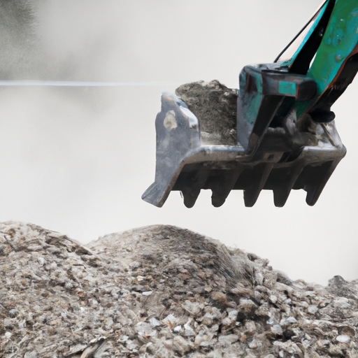

News
Rock Crusher
Rock Crusher
Types of Rock Crushers
Working Mechanism of a Rock Crusher
Uses of Rock Crushers
Maintenance of Rock Crushers
Impact of Rock Crushers on the Environment
Types of Rock Crushers
Types of Rock Crushers
Jaw Crusher
Cone Crusher
Impact Crusher
Gyratory Crusher
Roll Crusher
Working Mechanism of a Rock Crusher
Working Mechanism of a Rock Crusher
Crushing Process
Feeding and Discharging Material
Power Source
Size Reduction Techniques
Safety Measures
Uses of Rock Crushers
Uses of Rock Crushers
Sand and Gravel Production
Concrete and Asphalt Recycling
Ore Processing in Mining Operations
Road Construction
Landscaping Projects
Maintenance of Rock Crushers
Maintenance of Rock Crushers
Regular Inspection and Lubrication
Replacement of Wear Parts
Cleaning and Housekeeping
Troubleshooting Common Issues
Upgrading Equipment for Efficiency
About Us
Contact Us
GrinderCrusherScreen
What is a Rock Crusher and How Does it Work?
Sep 14, 2024
A rock crusher is a machine used to crush large rocks into smaller pieces.. It is commonly used in construction, mining, and road building industries.
What Are the Different Types of Rock Crushers Available?
Sep 14, 2024
Vertical shaft impactors are a type of rock crusher that is commonly used in the mining and construction industries.. These machines are designed to break down large rocks into smaller, more manageable pieces by applying force through a high-speed rotor. One of the main advantages of vertical shaft impactors is their ability to produce uniform, cubical-shaped particles, which are ideal for use in concrete and asphalt production.
What are the Key Components of a Rock Crusher?
Sep 14, 2024
The impact of the control system on crusher performance is a crucial aspect that cannot be overlooked when discussing the key components of a rock crusher.. The control system plays a vital role in ensuring that the crusher operates efficiently and effectively, ultimately impacting its overall performance. A well-designed control system can help regulate the speed and output of the crusher, ensuring that it is operating at its optimal capacity.
What Safety Measures Should be Followed When Using a Rock Crusher?
Sep 14, 2024
When using a rock crusher, it is crucial to follow safety measures to prevent accidents and injuries.. One of the most important things to remember is to use caution when working around moving parts.
How to Crush Rocks Like a Pro: Master the Art of Rock Crushing with Ease
Sep 14, 2024
When it comes to crushing rocks like a pro, there are bound to be some common issues that may arise during your operations.. But fear not, as troubleshooting these issues can help you master the art of rock crushing with ease. One common issue that may occur is blockages in the crusher.
Discover the Secrets of Effective Rock Crushing: Learn the Ultimate Techniques
Sep 14, 2024
Rock crushing operations can be a challenging and potentially dangerous task if proper safety precautions are not taken.. It is essential to follow best practices in order to ensure a successful and efficient operation. One of the most important safety precautions in rock crushing is to wear appropriate personal protective equipment (PPE).

Need a Reliable Rock Crusher? Here's How to Choose the Best One for Your Needs
Sep 14, 2024
Choosing the right rock crusher can be a daunting task, especially with so many options available in the market.. It's important to make a decision based on your budget and requirements to ensure you get the best value for your money. First and foremost, consider your budget.
Transform Rocks into Gravel in Minutes: Find Out How with our Top-notch Rock Crusher
Sep 14, 2024
When it comes to transforming rocks into gravel, our top-notch rock crusher is the perfect tool for the job.. But don't just take our word for it - hear what our satisfied customers have to say! One customer, Sarah, raved about how easy the rock crusher was to use.
How Rock Crushers Work: A detailed explanation of the mechanics and operation of rock crushers, including the different types of crushers available and their uses in various industries.
Sep 14, 2024
When it comes to operating rock crushers, safety precautions are absolutely crucial.. These powerful machines are designed to break down large rocks into smaller, more manageable pieces, but they can also be incredibly dangerous if not operated correctly. One of the most important safety precautions when using a rock crusher is to always wear proper protective gear.
Benefits of Using Rock Crushers: An exploration of the advantages that rock crushers offer in terms of efficiency, cost savings, and environmental impact compared to traditional methods of rock crushing.
Sep 14, 2024
When it comes to crushing rocks, traditional methods have been the go-to for many years.. However, with the advancements in technology, rock crushers have become a popular alternative that offer a multitude of benefits. One of the key advantages of using rock crushers is their efficiency.